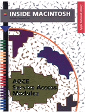

Inside Macintosh: AOCE Service Access Modules
Inside Macintosh: AOCE Service Access Modules describes how to write a software module that gives users and PowerTalk-enabled applications access to a new or existing mail and messaging service or catalog service.The PowerTalk system software provides mail, messaging, catalog services, authentication services, and digital signatures to Macintosh applications. Service access modules (SAMs) not only support the PowerTalk application programming interfaces but also provide an interface to external catalogs and to mail and messaging services. This interface is consistent with that provided by the PowerShare collaboration servers. This book shows how to
- write a catalog service access module (CSAM)
- write a messaging service access module (MSAM)
- write AOCE templates that allow a user to set up a CSAM or MSAM and add addresses to mail and messages
Inside Macintosh is a collection of books, organized by topic, that describe the system software of Macintosh computers. Together, these books provide the essential reference for programmers, designers, and engineers. A graphic overview of Inside Macintosh appears on the inside back cover of this book.
Availability: Click below to obtain Inside Macintosh: AOCE Service Access Modules in any of the following formats.

|
Acrobat (4088K) |